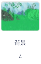
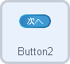
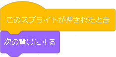
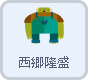
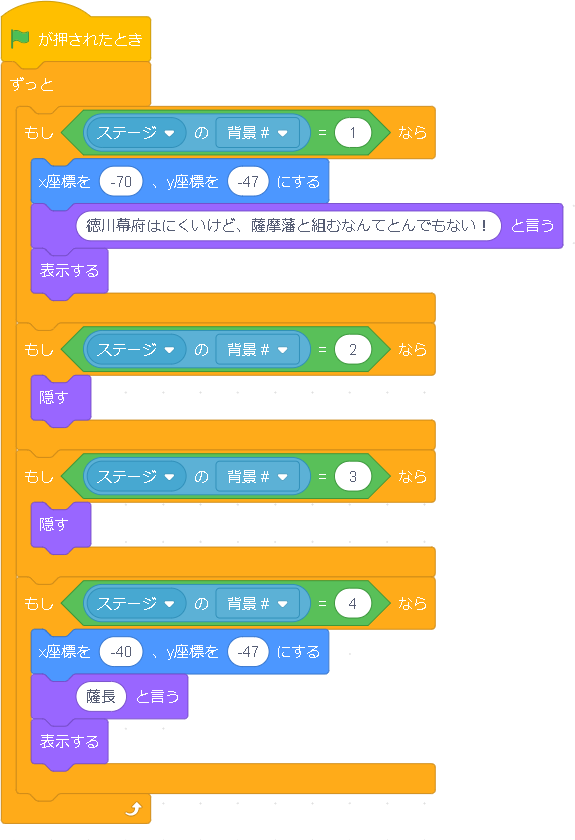

歴史四コマ漫画


歴史上の出来事を四コマ漫画にするというプログラムです。歴史を学ぶ学年で使え、プログラムも難しくありません。各自で好きな出来事を四コマ漫画にできてとりかかりやすいかと思います。
プログラムする背景 |
|
| １．四コマを始める前の準備―背景を動かす
このプログラムは、“ひとコマひと背景”という形になっています。なので、背景を四つ用意します。コマが進むにつれて、背景が変わるようにしたいので、背景に、緑の旗が押されたとき、一コマ目の背景にするようにプログラムします。いつどのコマでも、再実行したら、一からになるようにします。 |
|
プログラムするスプライト |
|
|  |
実行されてすぐに一コマ目の背景にするようにプログラムにしたので、次は、“次へ”と書かれたボタンのスプライトに、実行画面上の“次へ”のボタンが押されたら、次のコマ、つまり次の背景に変えるようにします。 |
プログラムするスプライト |
|
|  | ２．４コマの制作
背景が変わるようになったら |